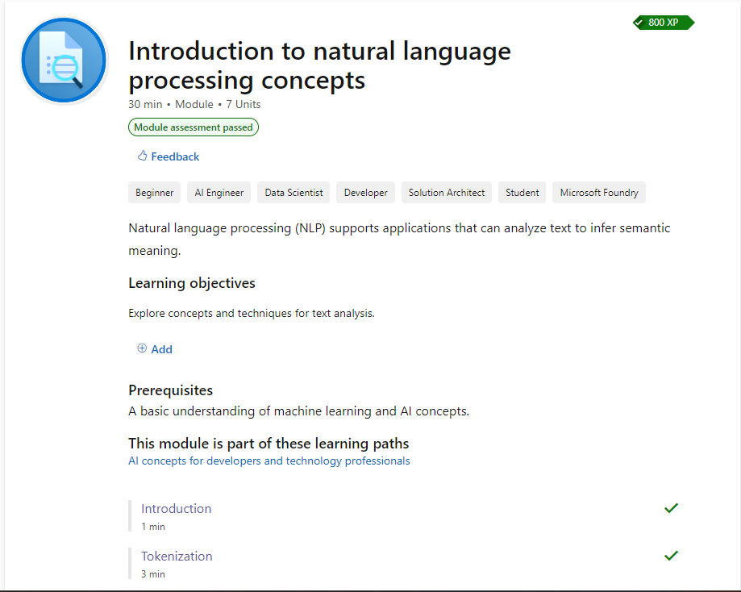

WW-P2: Introduction to NLP Concepts
Each way of representing text earns its cost differently, and every tool I tested failed in a way a bigger model alone wouldn't fix.
- Course
- Microsoft Learn module
- Completed
- July 24, 2026 · 30 min
- Assessment
- Passed
Summary
Completed Microsoft Learn's "Introduction to natural language processing concepts" module and tested three NLP tools hands-on: a local summarization model, a language detector and a PII analyzer. The IEEE-format reflection compares tokenization, TF-IDF and embeddings and documents where each tool broke.
- Module assessment Passed July 24, 2026
- Tools tested 3 Summarizer, language detector, PII analyzer
- Text representations compared 3 TF-IDF, static and contextual embeddings
Approach
The module supplied the vocabulary; the hands-on tests checked it against real tools.
- Learn: tokenization, word-frequency analysis, TF-IDF, embeddings and attention, through the self-paced Microsoft Learn module and its assessment.
- Test: run three tools on varied input, including short, mixed-language and oddly formatted text, and note where each one fails.
- Reflect: write up the trade-offs in an IEEE-format report.
- Tokenization
- Splitting text into units (words, sub-words or characters) a model can count or embed.
- TF-IDF
- A score for how important a word is to one document compared with the whole collection. Fast and explainable, but blind to meaning.
- Embedding
- A list of numbers that places words with similar meanings close together, so similarity can be measured.
Results
Which representation, when
| Representation | Strength | Weakness | Use it for |
|---|---|---|---|
| TF-IDF | Cheap, sparse, explainable | Ignores meaning | Keyword tasks and quick baselines |
| Static embeddings | Dense, captures similarity | One meaning per word | Similarity and semantic search |
| Contextual embeddings | Meaning adapts to surrounding words | Costlier to compute | Disambiguation and nuance |
For tokenization, sub-word units were the practical middle ground: word-level tokens stay readable but fail on rare words, while character-level tokens handle anything but make sequences long and expensive.
Tool tests
| Tool | Task | Worked well | Failed on |
|---|---|---|---|
| Phi-3.5-mini (local) | Summarization | Coherent, concise summaries offline | Nuanced content larger models keep |
| Language Playground | Language detection | Clear text in supported languages | Short snippets and mixed-language input |
| PII Analyzer | Personal-data extraction | Obvious personal data | False positives and misses on unusual formats |
The pattern: locally run tools are good for learning and keep data private, but production text analytics needs deterministic checks (rules, regular expressions) and human review layered on top of the model's output.



What I learned
This exercise introduced me to foundational NLP concepts — tokenization, statistical analysis such as word frequency, and semantic language models that introduced me to embeddings — followed by a hands-on exercise and a knowledge assessment. Working through tokenization trade-offs, TF-IDF, and embeddings gave me a strong foundation for the advanced topics ahead in this course: text processing, classification, sentiment analysis, and information extraction. I now better appreciate both the capabilities and the limitations of current NLP technologies, and I plan to deepen my understanding of transformer architectures, prompt engineering, retrieval-augmented generation (RAG), fine-tuning, and responsible AI practices as I continue — knowledge I intend to apply directly when designing my capstone project.
Technical details Concepts covered in the module
- Tokenization: word-level, sub-word and character-level, and the trade-off each makes between vocabulary size, handling of rare words and compute cost.
- Statistical text analysis: word frequency across a corpus, and TF-IDF as a sparse baseline that captures term importance but not meaning.
- Semantic language models: embeddings as dense representations that support similarity search and arithmetic over meaning.
- Context and attention: how transformer-style attention adjusts a token's meaning from its neighbours, which helps with ambiguous words.
The module was completed under the Microsoft Learn account iversonlabastida-9902. The submitted artifacts were the module transcript and the reflective report "Reflective Report about Introduction to Natural Language Processing Concepts."
Files
- Reflective report (IEEE format)PDF · prelims-01-reflection.pdf Open PDF
- Microsoft Learn transcriptModule completion record [TRANSCRIPT URL]